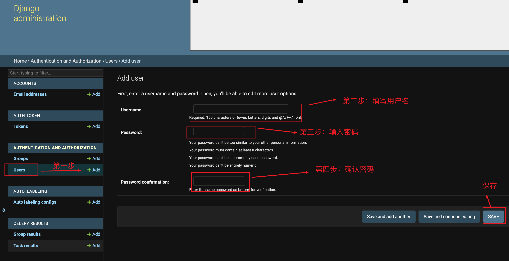
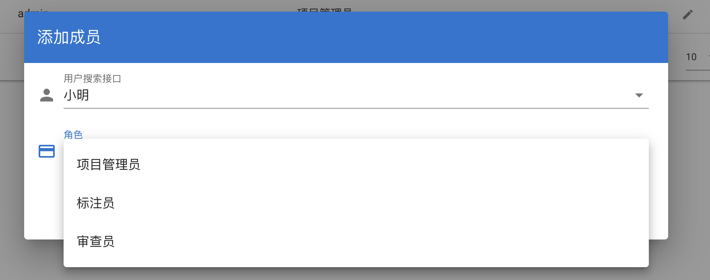
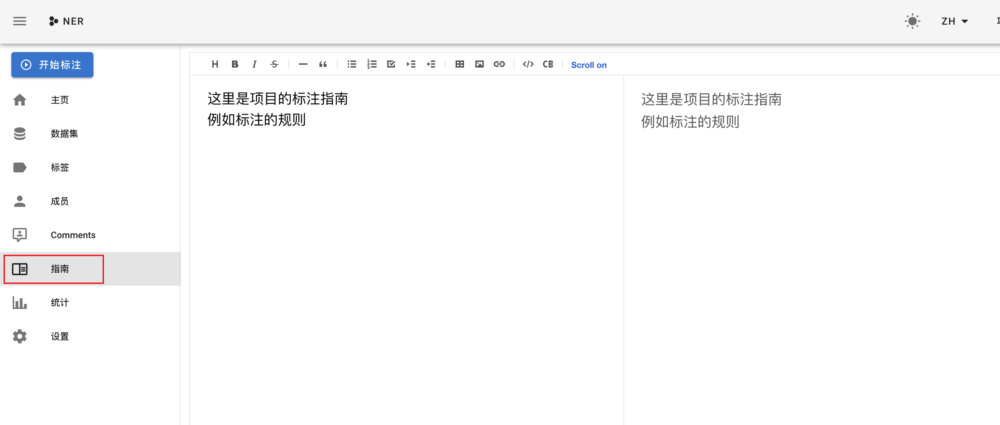
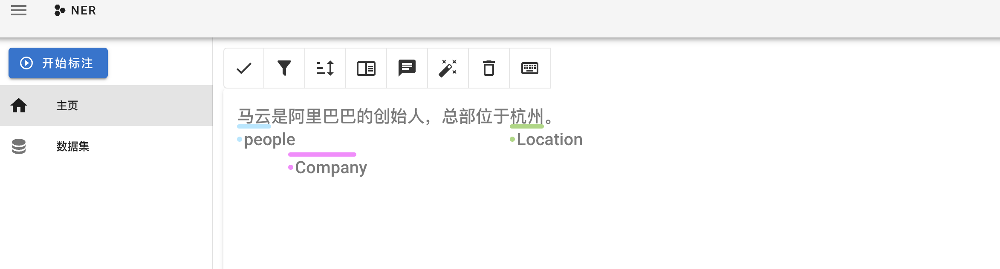
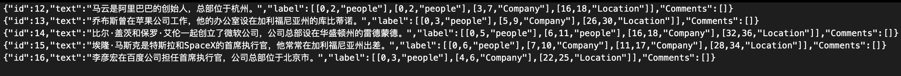

数据标注平台doccano的安装及使用¶
学习目标¶
- 掌握doccano的安装过程
- 掌握doccano的使用方法
Doccano平台介绍¶
- Doccano是documment anotation的缩写，是一个开源的文本标注工具，我们可以用它为NLP任务的语料库进行打标。它支持情感分析，命名实体识别，文本摘要等任务。
- 它的操作非常便捷，在小型语料库上，只要数小时就能完成全部的打标工作。下面介绍一下如何安装、配置和使用doccano。
一、doccano的安装¶
doccano的安装要在虚拟环境下进行！
- 进入你用到的虚拟环境中, 安装doccano
pip install doccano
- 然后，在终端里输入
# 初始化数据库
doccano init
# 创建一个super user。这里要把pass改成你需要的密码。当然，用户名也可以改成别的。
doccano createuser --username admin --password 1234
二、启动doccano¶
首先，在终端中运行下面的代码来启动WebServer
# 启动webserver
doccano webserver --port 8000
然后，打开**另一个**终端，运行下面的代码启动—任务队列:
# 启动任务队列
doccano task
三、运行doccano与创建新的文本打标项目¶
- 首先，打开浏览器（最好是Chrome），在地址栏中输入http://127.0.0.1:8000/并回车。
- 然后，我们点击中间的蓝色按钮“快速开始”。此时，我们会跳转到登陆的界面。这里，我们需要用之前创建的超级用户登陆。
- 完成登陆后，我们会来到“项目”的界面。我们可以点击左上角的“创建”按钮来创建新的项目；也可以点击“删除”按钮来删除已经创建的项目。
- 我们点击左上角的“创建”按钮，创建一个新的项目。
- 对项目进行基本的说明，在填写完要求的信息后，点击创建，我们就创建了一个新的NLP标注项目。在创建完成后，会自动跳转到项目的主页。
- 进入数据标注平台
最左侧是一系列可以选择的页面。“主页”这个标签下面是doccano提供的一系列教程，其他的页面可以对项目进行设置。
稍后，我们将在上图所示的界面中的完成文本打标项目的各项设置。我们会依次点击左侧的各个标签，依次进行设置。
四、添加语料库¶
- 我们直接从“数据集”这个标签开始看。
- 在“数据集”这个页面，我们可以将准备好的文本添加到项目中，为将来的打标做准备。
- 我们首先点击左上角的“操作”→“导入数据集“。
- 此时，我们会来到”上传数据”的界面。
- 如上图所示，doccano总共支持4种格式的文本，他们的区别如下：
- Textfile：要求上传的文件为txt格式，并且在打标的时候，一整个txt文件在打标的时候显示为一页内容；
- Textline：要求上传的文件为txt格式，并且在打标的时候，该txt文件的一行文字会在打标的时候显示为一页内容；
- JSONL：是JSON Lines的简写，每行是一个有效的JSON值。
- CoNLL：是“中文依存语料库”，是根据句子的依存结构而建立的树库。其中，依存结构描述的是句子中词与词之间直接的句法关系。具体介绍看汉语树库。
注意：
doccano官方推荐的文档编码格式为UTF-8。
在使用JSONL格式的时候，文字数据本身要符合JSON格式的规范。
数据集中不要包含空行。
- 这里我们以Textline格式举例。点击“TextLine格式”。然后在跳转到的界面里，设置File Format和Encoding。然后点击下图中的“Drop files here…”来上传文件，最后，点击导入即可。
-
此时，再点击“数据集”的标签，我们就可以看到一条一条的文本已经被添加到项目中了。将来我们将对这些文本进行打标。
五、添加标签¶
- 在这一部分，我们讲解如何往项目中添加在打标时可选的标签。
在NER任务中，我们可能会添加People、Location、Company等；在文本分类任务中，我们可能会添加Positive、Negative等标签作为打标时的可选标签。
注意，这里只是添加将来可供选择的标签，是项目配置的过程，而不是进行文本标注。
- 点击左侧的“标签”按钮，就来到了添加标签的界面。
- 继续点击“操作”按钮，并在下拉菜单中点击“创建标签”按钮。
-
在弹出的“创建标签”窗口里面，在标签名一栏写上标签的名字，键值代表快捷键。例如在NER的例子中，可以写People、Location、Company等。例如，我们给People设置的快捷键是p。将来在打标的时候，右手用鼠标选中段落中的文字（例如“白居易”），左手在键盘按下快捷键p，就可以把被选中的文字打标成“People”。
-
再往下，我们可以给标签自定义颜色。
- 全部设置好以后，点击右下角的“保存”按钮。
- 此时，一个标签就添加完成了。我们以同样的方法添加其他所需要的标签。
六、添加成员¶
- 在为机器学习的语料库打标的时候，由于语料库一般比较大，如果让一个人给所有的文本打标的话，那到地老天荒都完不成。因此，我们需要多个人协同完成语料库的打标工作。
- 回忆一下，此时我们的项目还只有一个成员，也就是在初始配置doccano的时候创建的超级用户admin。因此，为了让其他人参与到打标项目中来，我们首先需要为其他成员创建账户。
-
我们打开网页http://127.0.0.1:8000/admin/，来到数据库的管理系统页面Django administration，并用超级用户的账号密码登陆该管理系统。

- 此时，我们再返回项目的设置页面。点击左侧的“成员”标签，点击页面上的“添加”按钮，会弹出“添加成员”窗口。
- 其中，在“用户搜索接口”的下拉菜单里面可以找到我们刚添加的用户“小明”。
注意，在这里只能找到已经创建到的用户，而不能创建新的用户。如果要新建用户，必须要到前面Django administration界面。
-
同时，我们还可以设置不同的成员的角色，不同的角色对应着不同的权限。如下图，我们把小明设置为“标注员”。其他角色还有项目管理员和审查员。

七、添加标注指南¶
- 我们可以事前给标注员和审查员准备一些标注指南，便于项目成员理解我们标注的要求和注意点。
例如，在判断文本正负面倾向的文本分类任务中，我们要具体说明判断正负面的标准，例如满足哪些要求，我们就可以认为一个本文是正面的。
因为一万个读者眼里有一万个哈姆雷特，不同人对文本的理解和判断正负面的尺度是不一样的。我们只有把标准写具体、写明确了，让人不用动脑筋都能做出符合我们要求的判断，我们才能得到一个尺度统一的数据集。数据集上的打标尺度统一，是机器学习获得好的效果的前提。
- 添加指南的界面如下图所示。

八、开始给文本打标¶
- 准备工作忙活了老半天，终于可以进入正题了----给文本打标。
需要注意的是，上面的前期设置里面并不是所有的都是必须的。在最精简的情况下，我们可以在仅添加了数据集与标签后，就开始给文本打标。
- 这里，我们用标注员小明的账号登陆打标系统做演示。同样是打开http://127.0.0.1:8000/地址，输入小明的账号密码登陆。
- 和之前不一样的是，由于小明的角色是“标注员”，因此他只有打标的权限，没有对项目进行各项设置的权限，所以在左侧列表没有管理员用户的各项设置项目。
-
这里我们直接点击左上角的“开始标注”进行打标。
- 以NER任务为例，在打标的界面下，我们选中句子中的实体，会自动弹出一个下拉菜单，我们可以从这个下拉菜单中选择相应的实体类型People，也可以直接在键盘上按下p键。
这是添加标签之后的样子。

九、导出打标结果¶
- 当我们要导出标注结果的时候，我们重新用管理员用户登陆，在“数据集”页面下，点击“操作”→“导出数据集”。
- 在弹出的窗口中，根据我们的需要进行设置后，点击Export，即可导出标注结果。
-
保存好的文本是字典的格式。
-
如下图所示，保存了句子的ID、句子原文、实体的在句子中的位置、实体的类型。

本节小结¶
- 本章节主要给大家介绍了数据标注工具doccano的详细使用教程，大家在未来工作中如果需要数据标注可以借助此平台来完成